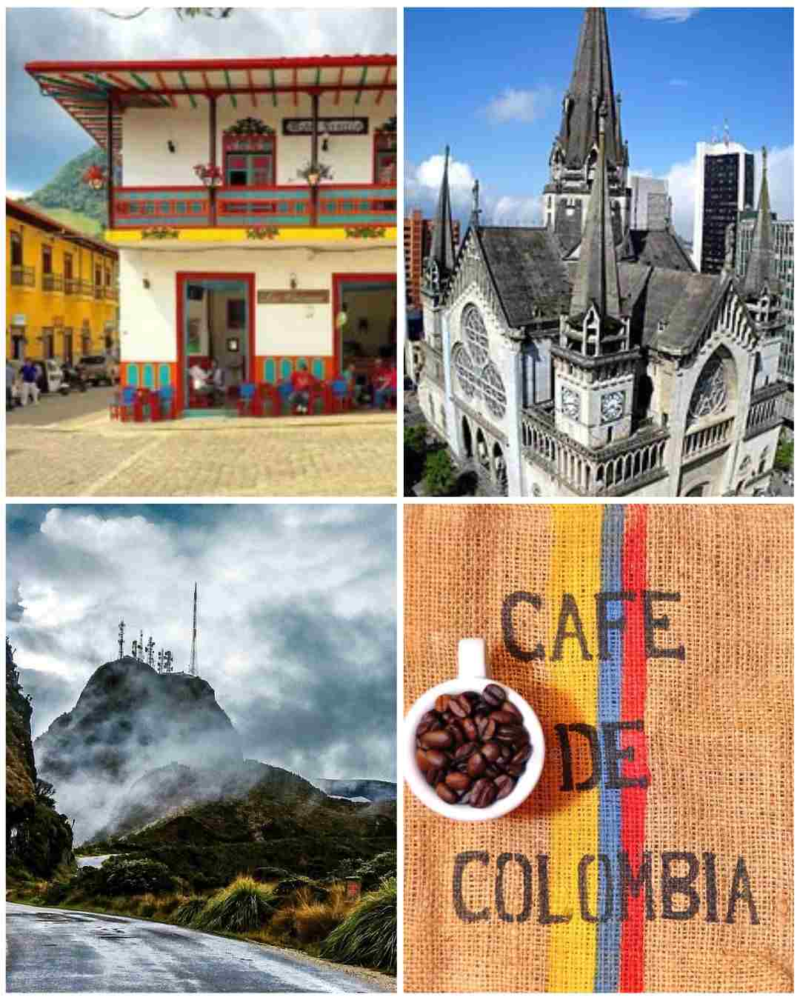

Laura Rendón Buitrago | WDD 130
Hi! My name is Laura Rendón and I am from Manizales, Colombia. I enjoy drawing, I am a very good drawer and some people pay for my artworks. Actually, I am a half-time tattoo designer. I do kickboxing and I love it, it is my favorite sport, it is relaxing, funny, and a healthy way to spend my time.
Manizales, Colombia

Manizales is the capital of the department of Caldas, Colombia. It is a small, cold city located in the central Andes mountain range, also home to the Nevado del Ruiz volcano, and home to the Andean condor. Manizales' culture is the Paisa culture, one of the most famous and representative in the country. One of the most representative places in Manizales is the Cathedral Basilica of Manizales, where the Polish Corridor is located. The cathedral is the tallest in the country, the third tallest in Latin America, and the fifth tallest in the world.
Colombia is world-renowned for its production of coffee, emeralds, and flowers. Colombian architecture encompasses a variety of styles, including colonial, modern, classical, and pre-Columbian. Colombian culture is considered one of the most vibrant in the world thanks to its music, art, food, warm people, and colorful architecture. Colombia is definitely the perfect vacation destination and a wonderful country where I feel proud to live.